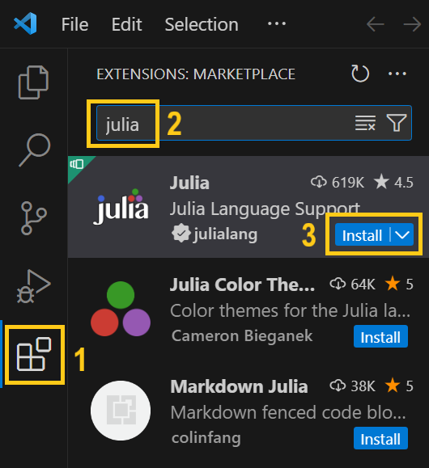
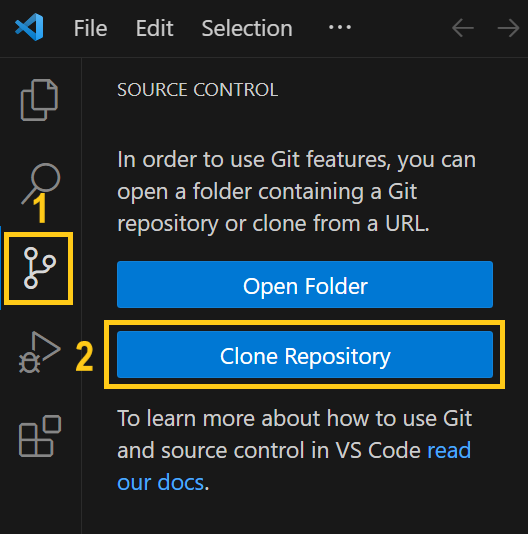

These setup instructions assume no prior Julia installation and will walk you through the steps to set up Julia, a code editor, and GlobalAnalysis.jl.
Installing Julia
Download the current stable Julia release from https://julialang.org/downloads/ and install it. Note down the path of the Julia executable as we will need it later; e.g., under Windows this could be C:\Users\Michael\Julia\Julia-1.9.4\bin\julia.exe.
Setting up VS Code
A convenient way to take advantage of Julia's multithreading capabilities in Jupyter notebooks is to run them in the code editor Visual Studio Code.
Download VS Code from https://code.visualstudio.com/Download and install it. Next, we will install the Julia extension in VS Code. Start VS Code and click on Extensions in the left menu bar. Search for julia and then click to install the official extension:

Finally, we will point VS Code to our Julia installation and enable multithreading. To this end, go to File > Preferences > Settings from the top menu bar in VS code.
- Executable path. In the search bar, enter julia executable, which should bring up Julia: Executable Path. Here, paste the path you have noted during the Julia installation.
- Mulithreading. In the search bar, enter julia threads, which should bring up Julia: Num Threads. Click on Edit in settings.json. This step takes you to a file called settings.json, where you will find
"julia.NumThreads"with some default value assigned. Replace the default value with the number of threads on your machine (typically twice the number of cores), if you know it; for example,"julia.NumThreads": 16for a machine with 8 cores. If you do not know this information, use"julia.NumThreads": "auto"to automatically detect how many threads to use.
VS Code and Julia are now set up. To verify that everything is working, you can press Ctrl + Shift + P (Windows/Linux) / Shift + Command + P (Mac) to bring up the command palette, and look for Julia: Start REPL. Selecting this option will bring up Julia's terminal within VS Code, indicated by the appearance of a green julia>. You can enter a simple command like 1 + 2, which should return the expected result.
Setting up GlobalAnalysis.jl
- Go to Source Control in the left menu bar and click Clone Repository. If Clone Repository is not available, you will be prompted to Download Git, which is required to work with repositories: follow the shown link and download and install Git - during the installation process, you can keep the default selected options. After restarting VS Code, Clone Repository should be available.

A windows appears at the top; paste
https://github.com/michaelsachs/GlobalAnalysis.jlhereA popup window asks where you want to save the repository folder. Pick any directory you like and click Select as Repository Destination
A popup asks whether you want to open the new repository. Click Open
Press
Ctrl + Shift + P(Windows/Linux) /Shift + Command + P(Mac) to bring up the command palette, and look forJulia: Start REPLPress
]to switch to the package managerType
instantiateand press enter. This will download and precompile all required packages, which may take a few minutesIn the file explorer (top icon in the left menu bar), navigate to the
notebooksfolder and select the notebook you want to runFor example, select
kineticModel.ipynban clickRun allto ensure everything is working. If you are prompted to choose a kernel, selectJuliaand then the Julia version you have installed in the previous step